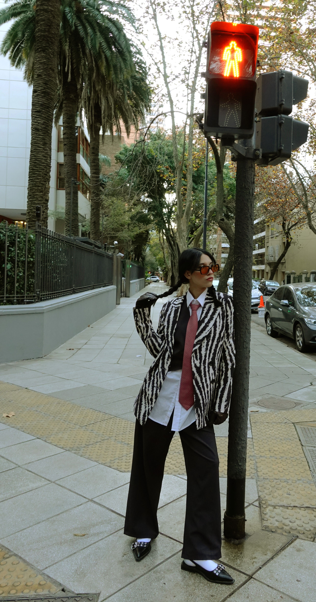
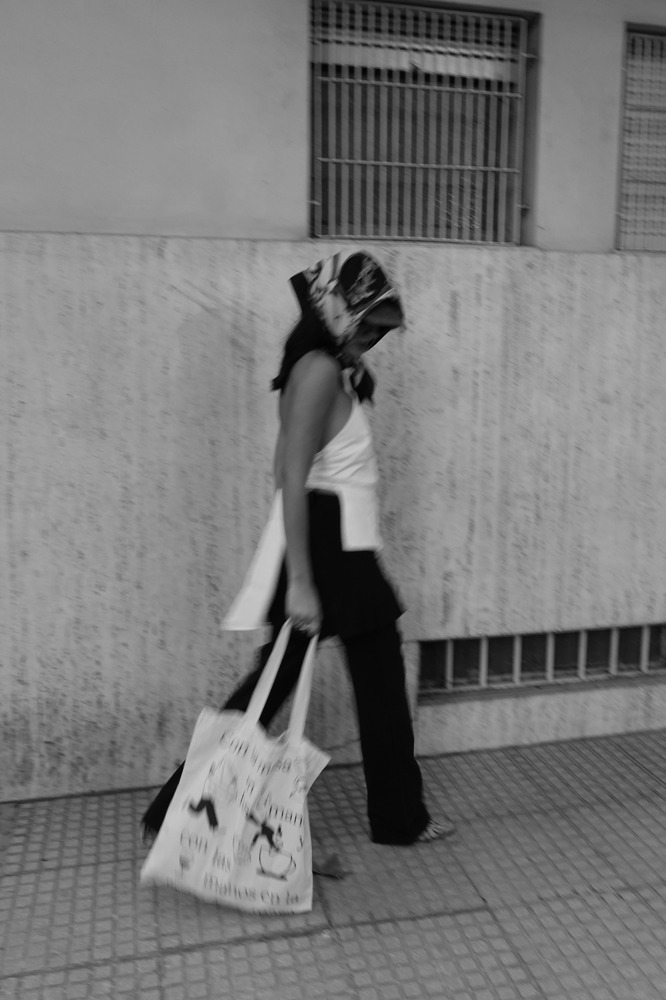
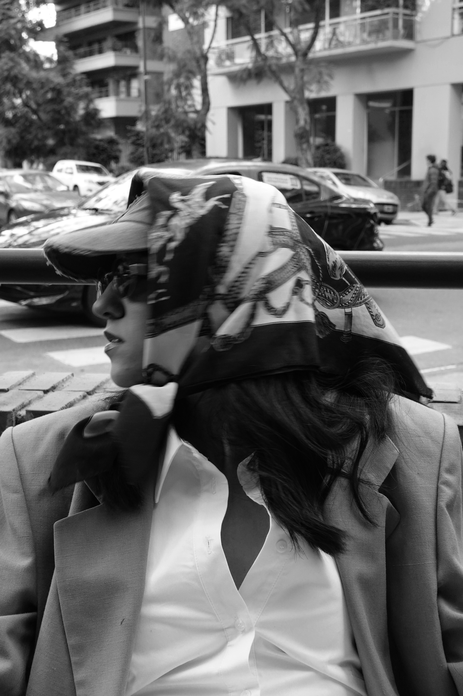
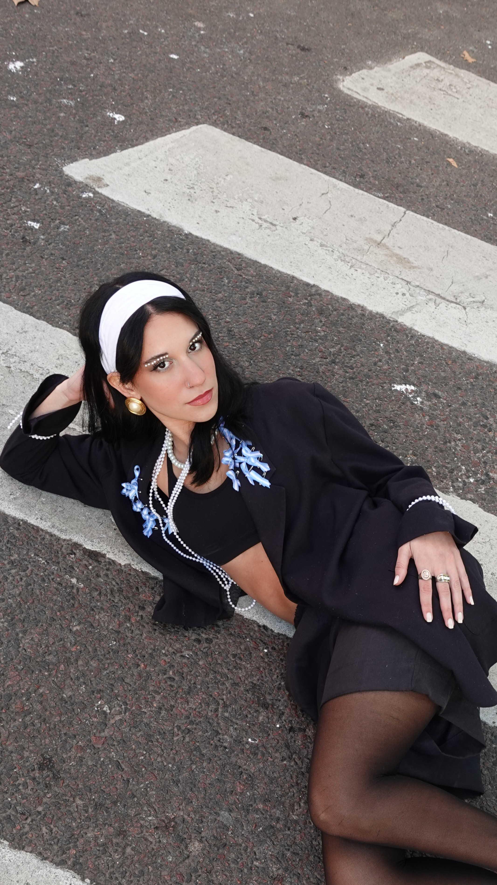

La protagonista lleva su historia encima, pero se deja afectar por lo nuevo. El estilismo refuerza este concepto de hibridez, rescatando elementos del vestir tradicional y reconfigurándolos en nuevas identidades.
